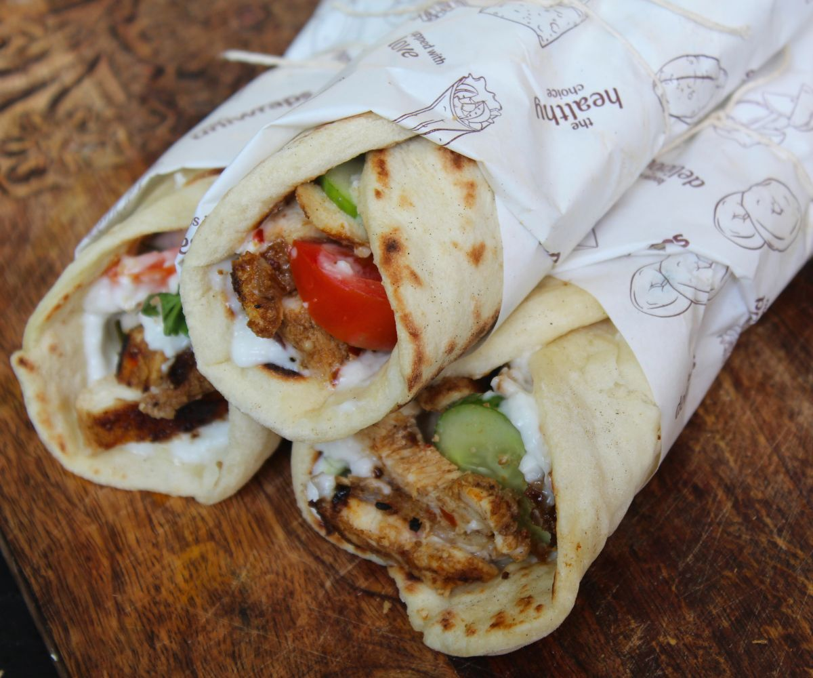

Shawarma is a Middle Eastern dish that originated in the Levant region of the Arab world during the Ottoman Empire, consisting of meat that is cut into thin slices, stacked in an inverted cone, and roasted on a slow-turning vertical spit.
Ingredients
2 1/2 lbs flank, ribeye, or skirt steak, thinly sliced
4 cloves garlic, pressed or minced
3 tbsp shawarma seasoning
1 tsp kosher salt
3 tbsp white vinegar
2 tbsp olive oil, divided
Pita or Lebanese bread
Toum
Sliced tomatoes
Onions
Pickles
Pickled turnips
Fries or roasted potatoes
Tahini sauce
Steps
Whisk together garlic, shawarma seasoning, salt, white vinegar, and 1 tablespoon olive oil in a medium bowl until combined. Add the sliced steak and stir together. Marinate for 1-3 hours, remove from the refrigerator 45 minutes before cooking.
Heat the remaining tablespoon of oil in a large cast iron pan over medium-high heat. Add the meat and cook for 6-10 minutes, tossing as needed or until cooked through. Remove from heat.
Add the prepared meat to warm Lebanese bread top with garlic or tahini sauce and load it up with your choice of veggies. Fold shawarma like a burrito and grill on a grill pan if desired before serving with French fries.